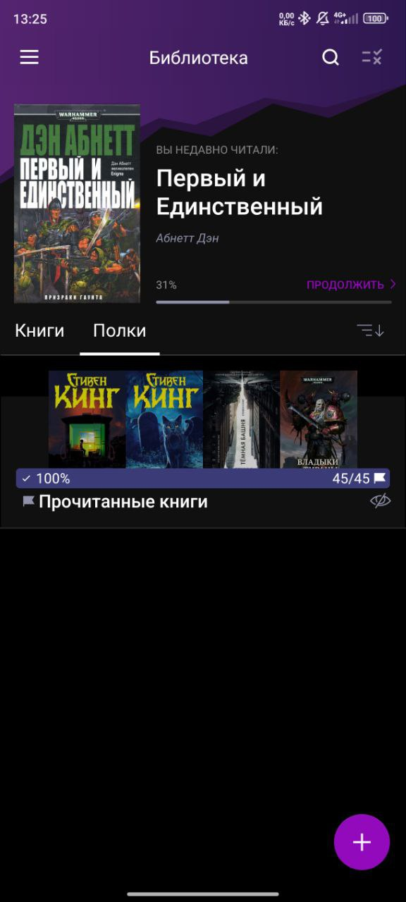
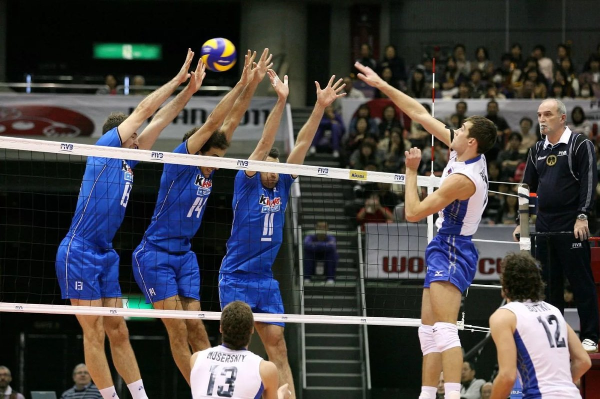
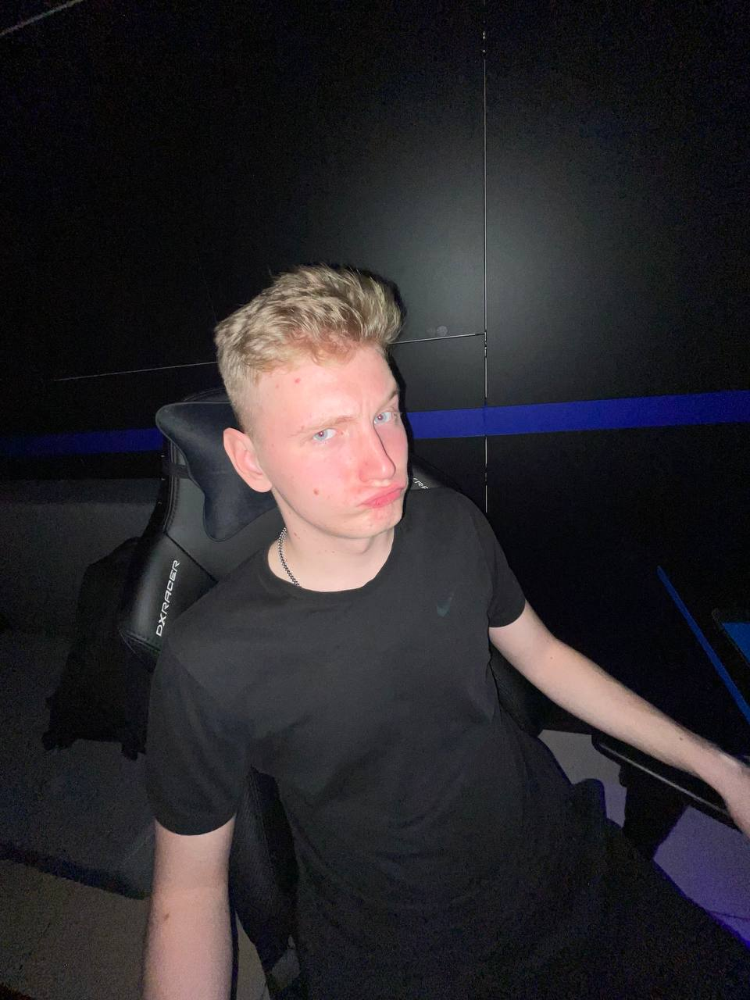
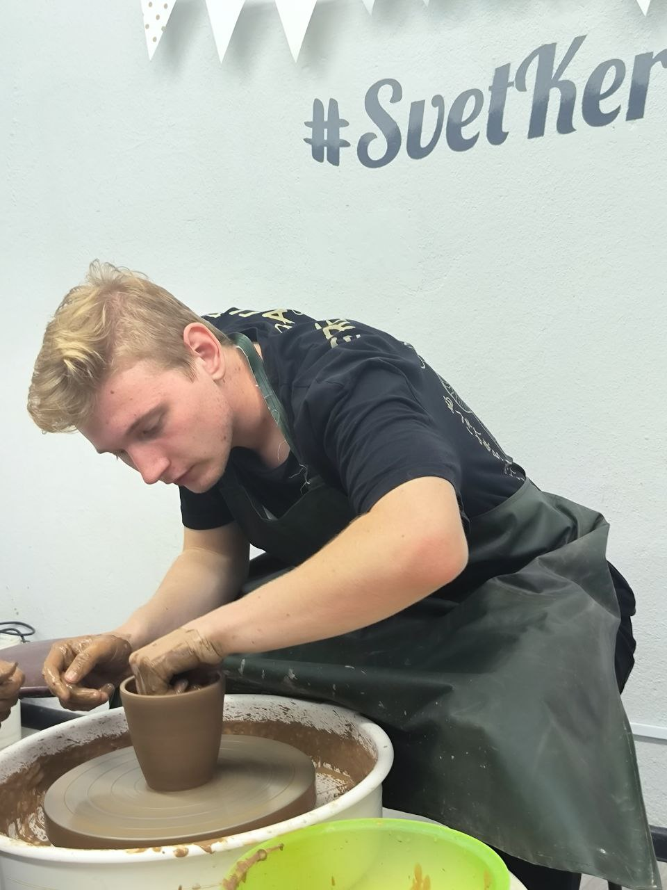
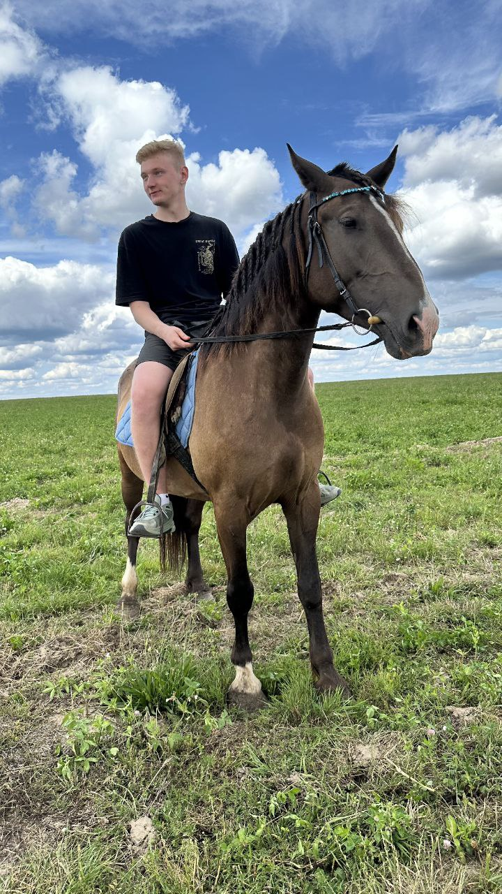
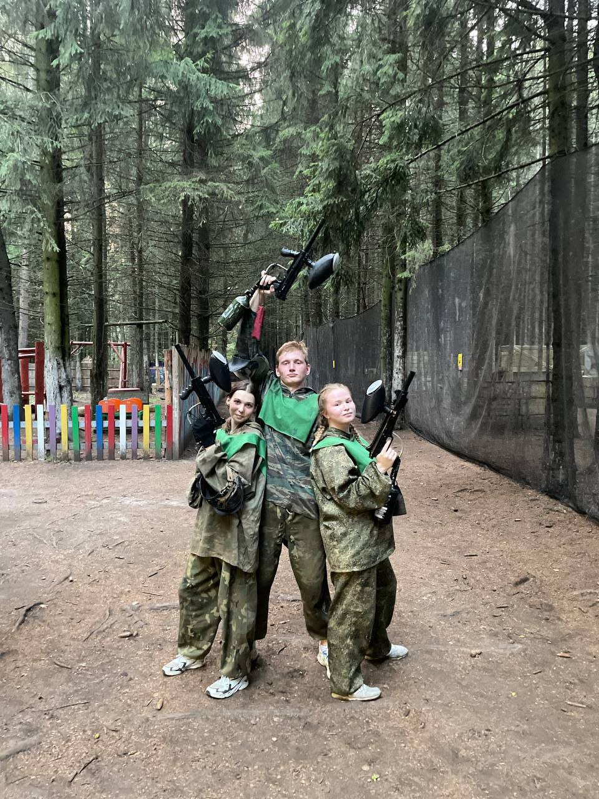

Привет! Меня зовут Иван. Мне 19 лет, я учусь в Академии Управления при Президенте. На данный момент я студент 3 курса специальности "Упправление информационными ресурсами".
ТАк же работаю контролером пассажирского транспорта в филиале Минсктранса "Минский автовокзал". Первое мое хобби - волейбол. Играю уже довольно долгое время, правда на любительском уровне(никогда не занимался и не состоял в профессиональнйо команде) Так же состою в сборной по волейболу нашего ВУЗа. Книги начал читать в классе эдак 10, на данный момент прочел всю серию книг Дюна(думал так, как оказалось последнюю не дочитал), всю серию книг игры претолов, всю серию книг Метро,всю серию книг Ведьмак и много много разных мелких книжек как от классиков современной литературе с упором в фантастику и фентези, так и множество книг различных любетелей и фанатов различных вселенных. Компьютерные же игры были моим хобби большую часть моей жизни, которое привело меня к многим другим хобби, но обо всем по порядку.Чтение - одно из моих любимых занятий. Если мне понравилась книга, то какой бы большой она не была - прочитаю ее очень быстро. ТАк на все книги ведьмака(Сапковского) у меня ушло чуть меньше месяца, метро я прочитал за такой же срок. Конечно, у меня бывают и перерывы в чтении, однако я всегда к нему возвращаюсь. Я очень часто читаю в метро, в автобусе и впринципе в любую свободную минутку. Ниже скриншот из приложения, которое я использую для чтения.
Волейбол - отличный способ провести время с друзьями. Начал играть во второй половине 11 класса, после этого очень много времени провожу на площадке любительском Очень нравится командный дух этой игры, а так же очень люблю играть у сетки. ИЗ интересных фактов - со своей девушкой познакомился именно на волейбольной площадке Фотографий к сожалению у меня нет, так как я хожу чтобы играть а не позировать, так что смотрим на тройной блок российского "Динамо"
Игры на компьютере часто помогают отдохнуть после тяжелого учебного или рабочего дня. За свою жизнь я сыграл в огромное множество игр самых различных жанров. это и стратегии, и шутеры, и рпг, и ммо и так далее и так далее. Больше всего наверное я люблю стратегии и шутеры. Являюсь поклонником серий игр Total War, раньше очень любил Старкрафт(в пике имел 6000 ммр) Сейчас же не имею особо много времени для игр(да да, приходится взрослеть). Компьютерные игры привели меня к новым увлечениям - созданию игр, а так же 3D графика. НА данный момент эти увлечения почти изжили себя, но в какой-то момент своей жизни всерьез задумывался стать геймдизайнером или 3d-generalistом На фото ниже мо яфотография из компьютерного клуба.
Так же я активно учавствую в культурной деятельности своего предприятия. На фото выше видно нашу команду с молодежного фестиваля "Верасневыя зоры". Он проходил 6-8 сентября в санатории "Волма". На данном фестивале мы заняли 4 место из 16 команд участников. В нашей команде был и директор нашего филиала, его зам,множество работников минского автовокзала и конетролеров.
Так же люблю пробовать новые для себя занятия, ние будут некоторые из них:
 Фото из гончарной мастерской, делаю себе кружку дял чая и не только  Фото с конной прогулки, впервые в жизни сам катался на лошадке  Фото после первой игры в пейнтбол, очень понравилось, хоть и осталось пару синяковCсылки на соц. сети не оставлял, т.к. ничего туда не выкладываю.